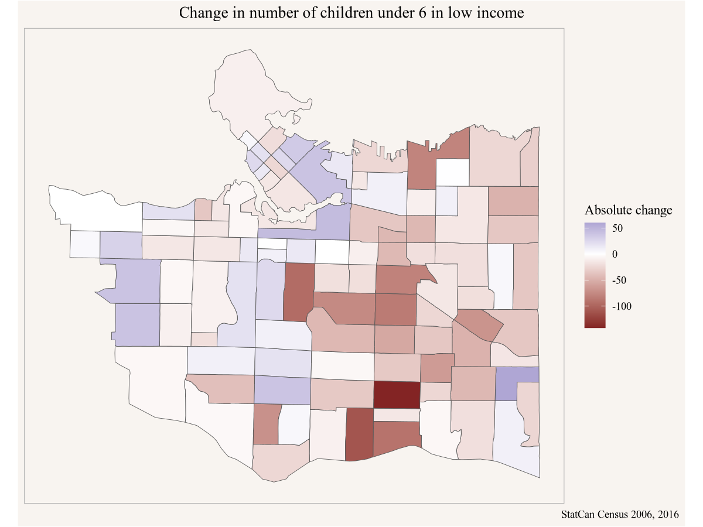

1 Introduction
In this section we give a taste of what’s to come. Some of the concepts introduced in the preface may be too abstract to picture for people just starting out in this space. People probably grasp the importance of having a principled approach to data analysis, from formulating a question all the way to sharing results. But why so much emphasis on reproducibility and adaptability? And do we really need to learn a new framework like R for this?
This is best understood by walking through a simple example of what analysis of Canadian data in R, and a Canadian data community might look like. We won’t explain all steps in full detail here, this is to serve to illustrate the concepts talked above in the preface and give the reader a taste of what’s to come.
If you don’t understand all the code now, don’t worry, that’s part of the point of this book. We will work out and explain these examples in detail in the first chapter of the book. What’s important right now is to illustrate the principle of reproducible and adaptable code, and how this can function to foster a community of Canadian data analysis. And to note how little code is needed to make this work.
If the code becomes a bit overwhelming, it’s also ok to just collapse individual code blocks for now, or all code blocks using the “</>Code” dropdown menu at the top right of this page, and just follow along without it.
1.1 A hypothetical example
Imagine Amy, a Toronto-based social services worker looking to pilot a community intervention targeted at children in low income. She is in the process of putting together a proposal describing her intervention and is trying to locate a good neighbourhood for her pilot and make a compelling case to possible funders.
Amy knows that census data has a good geographic breakdown of children in poverty, but the latest available data is from 2016, using 2015 income data. CRA tax data is available up to 2019, but also has information on families in low income, but nothing directly on children in the standard release tables at fine geographies. As a first step she settles on census data, with the goal to re-run the analysis once the 2021 data comes out later in the year.
She refers to the Census Dictionary to understand the various low income measures, and uses CensusMapper’s interactive map that allows to explore these concepts. She would have liked to use the Market Based Measure, but due to data availability she settles for LICO-AT.
She sets up a new Notebook and loads in the R libraries that she will need for this, ggplot2 for graphing and cancensus for ingesting the data.
Next she pull in the data. the CensusMapper API GUI tool helps her locate the StatCan geographic identifier for Toronto, (3520005), and the internal CensusMapper vector for the percentage of children in LICO-AT (v_CA16_2573).
Code
lico_yyz <- get_census("CA16",regions=list(CSD="3520005"), vectors=c(lico="v_CA16_2573"),
level="CT",geo_format="sf")Here Amy specified that she wants data for the 2016 Canadian census (“CA16”), the region and vectors, at the census tract (“CT”) level, with geographies as well as the low income data.
Now that she has the data at her finger tips her first step is to make a map. For that she needs to tell ggplot is what variable to use as fill colour, and maybe give it a nicer colour scale and some labels to explain what the map is about.
Code
Based on this she locates a couple of good candidate neighbourhoods for her pilot and sends the map in a email to her colleague Peter to get input on which neighbourhood might be best suited.
Peter has some good feedback for Amy, but also gets an idea to try and set up something similar in Vancouver. Peter asks Amy if she can share the code, and Amy sends along the above code snippets. Peter looks up the geographic identifier for Vancouver and subs that in instead of Toronto’s.
Code
lico_yvr <- get_census("CA16",regions=list(CSD="5915022"), vectors=c(lico="v_CA16_2573"),
level="CT",geo_format="sf")
ggplot(lico_yvr, aes(fill=(lico/100))) +
geom_sf() +
scale_fill_viridis_c(labels=scales::percent) +
coord_sf(datum=NA) +
labs(title="Children in low income (LICO-AT)",
fill="Share",
caption="StatCan census 2016")
Easy peasy, thanks to Amy’s previous work. Peter takes the map to his friend Yuko and asks her for advice where a community-based intervention for low-income children might make sense in Calgary. Yuko asks for the code from Peter to take a closer look herself.
Yuko is interested in a finer geographic breakdown, so she swaps our the geographic level from census tracts to dissemination areas.
Code
lico_yvr_da <- get_census("CA16",regions=list(CSD="5915022"), vectors=c(lico="v_CA16_2573"),
level="DA",geo_format="sf")
ggplot(lico_yvr_da, aes(fill=(lico/100))) +
geom_sf() +
scale_fill_viridis_c(labels=scales::percent) +
coord_sf(datum=NA) +
labs(title="Children in low income (LICO-AT)",
fill="Share",
caption="StatCan census 2016")
But then Yuko pauses to think that maybe looking at share of the low income population is not the right metric. She decides to query the number of children in low income (vector “v_CA16_2558”) and prepare the data for a dot-density map.
Code
# remotes::install_github("mountainmath/dotdensity")
library(dotdensity)
lico_dots_yvr <- get_census("CA16",regions=list(CSD="5915022"),geo_format="sf",
vectors=c(lico="v_CA16_2558"), level="DA") |>
compute_dots("lico")
yvr_city <- get_census("CA16",regions=list(CSD="5915022"),geo_format="sf")
ggplot(lico_dots_yvr) +
geom_sf(data = yvr_city) +
geom_sf(colour="brown",alpha=0.1) +
coord_sf(datum=NA) +
labs(title="Children in low income (LICO-AT)",
fill="Share",
caption="StatCan census 2016")
That paints a somewhat different picture, and Yuko feels this is much better suited to pinpoint where to best stage a community intervention. She lets Peter and Amy know and emails them her modifications to the code.
Meanwhile, Yuko’s Vancouver friend Stephanie is looking specifically at children below the age of 6 in low income, and wants to understand how the geographic distribution of low income children has changed over time. Comparing census data through time can be tricky because census geographies change, but this problem has been completely solved via the tongfen R package. Looking at Yuko’s work she thinks it might be best to look at both, the change in share of children in low income as well as the change in absolute number.
Code
library(tongfen)
meta <- meta_for_ca_census_vectors(c(total_2006="v_CA06_1982",lico_share_2006="v_CA06_1984",
lico_2016="v_CA16_2561",lico_share_2016="v_CA16_2576"))
lico_data <- get_tongfen_ca_census(regions=list(CSD="5915022"),meta,level="CT") |>
mutate(lico_2006=total_2006*lico_share_2006/100) |>
mutate(`Absolute change`=lico_2016-lico_2006,
`Percentage point change`=lico_share_2016-lico_share_2006)Armed with this data Stephanie can plot the absolute and percentage point change in children below 6 in low income.
Code

Code

Stephanie shares her results with Amy in Toronto in case there are components of Amy’s pilot specifically targeting children below 6 in low income.
Meanwhile Amy has been trying to understand more broadly how the share of low income children has evolved since the 2016 census (using 2015 income data) at the metropolitan level over longer time spans, so she looks through the StatCan socioeconomic tables and settles on table 11-10-0135, which also allows her to compare various low income concepts.
Code
library(cansim)
mbm_timeline <- get_cansim("11-10-0135") |>
filter(`Persons in low income`=="Persons under 18 years",
GEO=="Toronto, Ontario",
Statistics=="Percentage of persons in low income")
ggplot(mbm_timeline,aes(x=Date,y=val_norm,colour=`Low income lines`)) +
geom_point(shape=21) +
geom_line() +
scale_y_continuous(labels=scales::percent) +
labs(title="Children in low income in Metro Toronto",
y="Share of children in low income",
x=NULL,
caption="StatCan Table 11-10-0135")
She notes that there has been a substantial overall drop in children in low income since 2015 across all measures, which is excellent news. She considers pushing off her pilot project until after the 2021 census data comes out to first understand if the geographic patterns have changed.
1.2 What you will learn in this book
Looking at R code for the first time can be intimidating. If the code looks opaque right now, there is no need to worry. It will be explained in detail in the first chapter and is very much part of the rationale for writing this book. If decisions around what low income metric to pick, or why tongfen is needed to compare census data through time are not clear, again, that will be explained in this book in detail and expanding understanding of data and data analysis is the other big rationale for this book.
Readers will learn how to reproduce analysis, how to critique analysis, and adapt it for their own purposes. And readers will learn how to conduct their own analysis in the Canadian context, based on questions and use cases relevant to them.
Hopefully the above hypothetical scenario have explained how the adaptability of the R code has made life much easier for several of the subsequent analysis steps, and how little code was needed to gain some insights and communicate results.